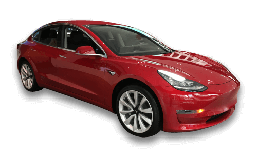
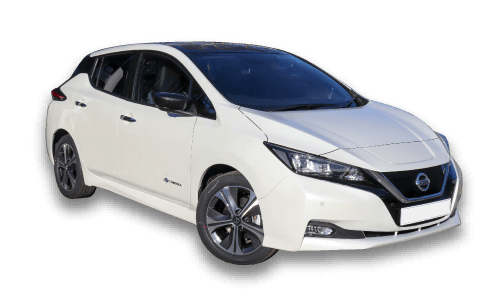
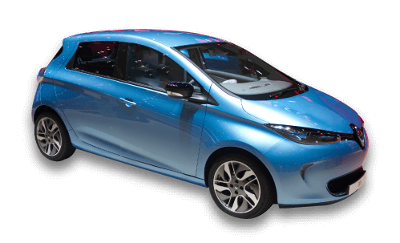
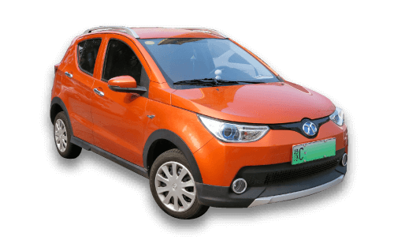
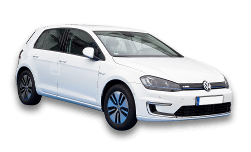

The Top Selling Electric Car Model
When it comes to electric cars, which model dominates the market? Take a look to see the top selling car according to the number of countries it is most popular in.
Select a bubble to find out more about each car.
- 
The Model 3 Tesla was first put into production in 2017, and to date is the world’s best-selling electric car. The Model 3 is a four-door sedan style and has an electric range of between 250 - 322 miles.
Model 3
Top selling model in
19 countries - 
The Nissan Leaf was the first mass-produced 100% electric vehicle, introduced in 2010. The Leaf can travel 168 miles on a single charge and can get up to 80% charge in 60 minutes.
Leaf
Top selling model in
9 countries - 
The Renault Zoe was launched in 2013, as a bright and modern urban car. This small hatchback can travel up to 245 miles on a charge and is the most affordable electric vehicle to date.
Zoe
Top selling model in
6 countries - 
The EC-Series is a popular choice in China’s megacities, with its competitive price and revised design. The EC-Series has a range of 128 miles.
EC-Series
Top selling model in
6 countries - 
In 2012, Volkswagen launched the e-Golf and began full production in 2015. This hatchback can achieve 125 miles on a single charge and spring 0-60mph in 8.5 seconds.
e-Golf
Top selling model in
3 countries
All data available on request.
Image attribution can be found here.